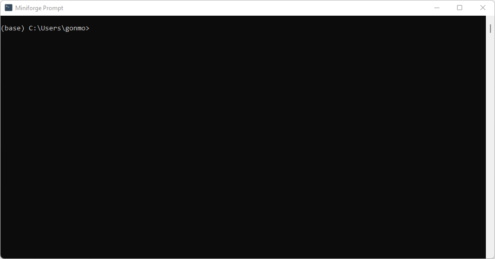

Guía de instalación de las herramientas computacionales#
Para instalar Python en nuestro sistema operativo utilizaremos un gestor de entornos y paquetes (bibliotecas) de Python que se encargará de instalar todas las herramientas que estaremos utilizando en el curso.
Este gestor de entornos nos permite tener una o varias instalaciones de Python, de igual o distintas versiones sin afectar nuestro sistemas operativo.
Este gestor puede se puede obtener de distintas fuentes:
Anaconda. Es la forma más difundida de obtener Python para uso científico. Sin embargo está orientada al uso de herramientas inteligencia artificial, data mining, machine learning que ocupan mucho estapcio y no estaremos utilizando. Por otro lado tiene una licencia que no puede ser usada libremente para usos comerciales.
Miniconda. Es la forma reducida de bajar el gestor de anterios sin todas las herramientas mencionadas. En caso de requerirlas se pueden instalar con el propio gestor de paquetes. Esta instalación conserva las mismas restricciones que Anaconda respecto a su licencia.
Miniforge3. Es equivalente la Miniconda, pero mantenido por la comunidad. De esta manera no posée las restricciones de liecnias para uso comercial.
Para este curso se recomienda instalar Miniforge3 o en su defecto Miniconda. Sin embargo, si ya se posée una versión de Anaconda instalar en la máquina puede ser usada sin problemas, ya que generaremos un nuevo entorno de Python en el cual instalaremos todas las herramientas necesarias.
Descargar Miniforge o Miniconda#
El primer paso consiste en instalar algunos de los gestores, siguiendo el enlace correspondiente. Personalmente prefiero utilizar Miniforge por la ventaja de la licencia libre.
Desaconsejo instalar Anaconda por la cantidad de herramientas que trae por defecto y que en general, no serán utilizadas.
Instalar Miniconda o Miniforge#
Seguir las recomendaciones por defecto dadas por el instalador. Una vez terminada la instalación tendremos Python instalado en nuestro sistema. Además tendremos en el menú de inicio (en caso de estar usando Windows u OSX) un ítem que se llama Anaconda Prompt o Miniforge Prompt dependiendo del gestor que se haya instalado.
Deberemos abrir este programa y nos aparecerá una muy útil ventana como la que vemos en la imagen siguiente.

Ahora si, calma y no desesperar.
Lo que vemos a la izquierda entre paréntesis es el entorno que estamos utilizando. En este caso el base que es el preinstalado y que es muy básico. Lo siguiente es la carpeta donde estamos parado, que en general es la carpeta por defecto de usuario. Para movernos entre carpetas usando el comando cd.
Por ejemplo si queremos ir a la carpeta Downloads que se encuentra dentro de la carpeta de usuario debemos escribir
cd Downloads
Y para volver a la carpeta «padre», podemos escribir
cd ..
Ahora que sabemos movernos entre carpetas con la linea de comandos, continuaremos con las instalación del nuevo entorno con todas las herramientas del curso.
Instalación de las herramientas especificas del curso#
Para continuar con la instalación necesitaremos descargar el archivo dsp.yml haciendo click sobre el enlace anterior. Una vez descargado, dirigirse con la consola de Anaconda Powershell Prompt abierta en la carpeta de descargas donde se encuentra el archivo dsp.yml descargado anteriormente. En general, para dirigirse a esta carpeta podemos tipear (salvo que hayamos cambiado la carpeta de descargas en la configuración de nuestro navegador):
cd Downloads
Para verificar que el archivo se encuentre ahí, podemos tipear:
dir dsp.yml
Si nos encontramos en la carpeta donde está el archivo este deberá aparecer luego del comando anterior.
Finalmente para instalar todas las herramientas necesarias en el curso debemos ejecutar en este comando:
conda env create --file dsp.yml
O mejor aún, si instalamos Miniforge, podremos escribir
mamba env create --file dsp.yml
que funciona exactamente igual que conda bastante más rápido para resolver las dependencias del entorno.
Una vez terminado este paso tendremos instaladas todas las herramientas necesarias para la materia. Este paso puede tardar un tiempo largo dependiendo de la velocidad de conexión.
Herramientas de edición y «programación»#
Durante el curso, para hacer los cálculos utilizaremos los cuadernos de Jupyter con Python.
Para poder leer estos cuadernos podremos utilizar cualquiera de las siguientes herramientas:
Jupyter Lab#
Se encuentra instalada con el entorno. Para ejecutarla deberemos abrir la consola y escribir:
conda activate dsp
jupyter lab
El primer comando activa el entorno y el segundo abre la utilizar la herramienta jupyter lab para ser utilizada en el navegador de su preferencia.
Visual Studio Code#
Es un editor de texto libre de Microsoft con facilidades de IDE (integrated development environment) con el cual mediante el uso de plugins podemos abrir y editar los cuadernos de Jupyter.
Para instalarlo debemos seguir este enlace y luego descargar y ejecutar el instalador.
Para poder abrir los cuadernos con esta herramienta se deben agregar plugins, también desarrollados por Microsoft que los instala de forma automática cuando se intenta abrir un cuaderno.
Spyder#
Es un entorno desarrollado con la intención de tener una interface similar a la de Matlab. Para instalarlo debemos ejecutar los siguientes comandos
conda activate dsp
mamba install spyder spyder_notebook
La principal desventaja de este IDE es que es mucho más pesado para ejecutarse, difcultando su uso en computadores antiguos.
Comentarios respecto al IDE a utilizar#
Es importante ganar cierto práctica con el uso de la herramienta que se va a utilizar. En principio Jupyter Lab es una muy buena herramienta si no se tiene experiencia en la programación. Cuanta con la posibilidad de tener la ayuda en una ventana, explorador de variables, autocompletado, debug, etc.
Visual Studio Code es otra muy buena posibilidad para abrir los cuadernos y trabajar con ellos, aunque a veces requiera un poco más de trabajo su configuración.